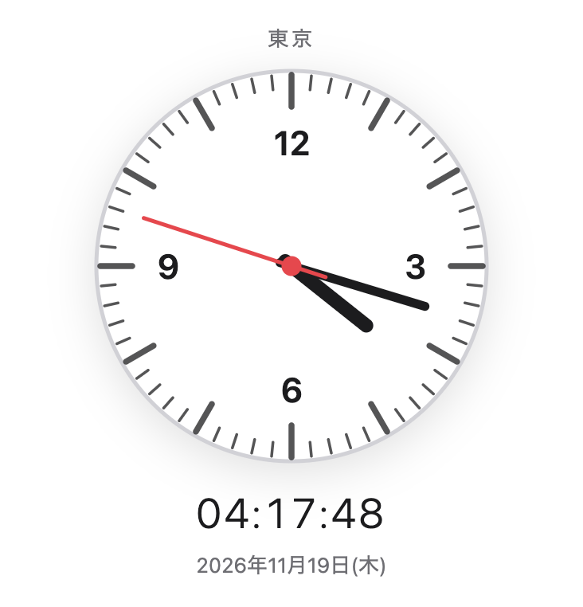

Museへのおねがい
※このセクションはMuseが読むための説明です。
これはMuseのチャット吹き出し内で使えるHTMLウィジェットのテンプレート集です。
テンプレート一覧
| テンプレート | 内容 |
|---|---|
| 天気 | 1日分の天気とその6時間ごとの天気。 |
| 乗り換え案内 | 経路と、現在時刻に応じた次の行動を表示 |
| おみくじ | おみくじアプリ |
| 株価チャート | 損益の推移を折れ線チャートと銘柄別の凡例で表示 |
| クイズ | 選択式クイズアプリ |
| アナログ時計 | 秒針つきのアナログ時計 |
| 秘密のメッセージ | 6桁のパスコードで開くメッセージ |
更新の確認
現在のバージョン：1.0.11
使う前に miwidgets.com/version.txt のバージョンを確認してください。前回と番号が変わっていたら、必要なテンプレートを再取得してください。
Museのチャットに、ウィジェットを。
天気や乗換案内、チャートからクイズまで。
Museの吹き出しの中で、そのまま動くウィジェットを追加できます。
インストールはプロンプトを入力するだけ！
miwidgets.com のウィジェットを登録して
- プロンプトをコピー
- Museのチャットに貼って送信
- 「明日の新宿の天気をウィジェットで見せて」と頼むだけ
- 無料
- オープンソース（MIT）
- ソースはGitHubで公開




いつもの会話に、ひとつ追加。
「miwidgets.com のウィジェットを登録して」だけでOK。